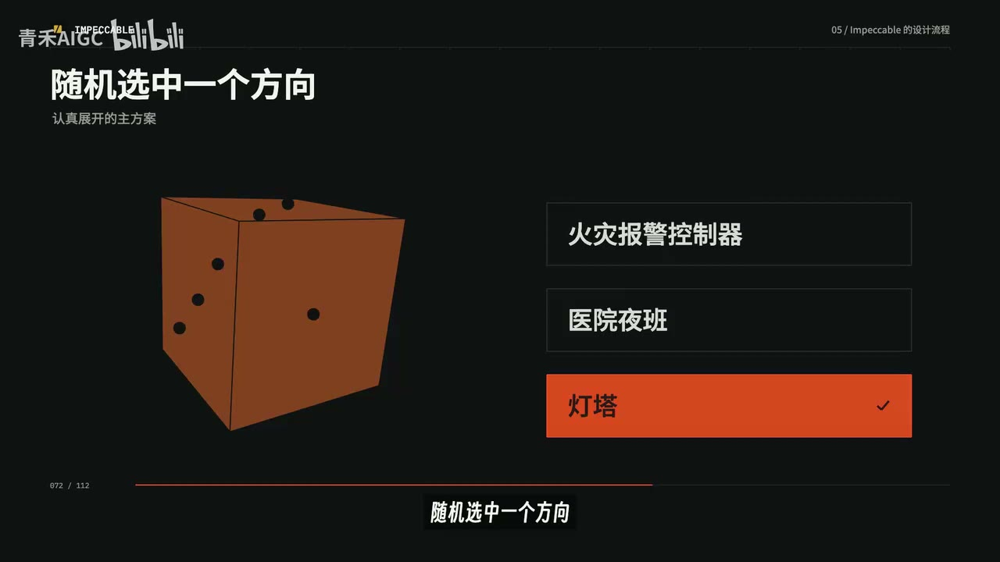

原视频 · 在线回看
点击后联网加载 B 站播放器；本地不下载整段视频。

原视频 · 在线回看
点击后联网加载 B 站播放器；本地不下载整段视频。
原视频标题：深度拆解 Impeccable Skill｜让 AI 像设计师一样思考
上传者：青禾AIGC
时长：17:36
来源：Bilibili 视频页
总结强度：standard
AI 做网页很快，难点在于生成的页面常常像套用同一类模板：紫色渐变、发光装饰、同样显眼的功能卡片，以及看上去能点、实际没有功能的标签。Impeccable 的案例把网页设计 skill 和一套设计流程放在一起，目标是让页面更贴近具体产品和使用场景。
上传者先用四个角度解释他认可的好设计。第一是符合预期：看起来像按钮的东西应当能点，闪烁的状态灯应当对应真实状态。第二是主次分明：页面要有一个清楚的重点，其他内容在层级上为它让路。第三是克制：颜色、边框、间距和装饰都要有存在理由。第四是量身定制：设计要考虑产品是什么、给谁使用、人在什么场景下使用。
药袋与薯片包装说明了最后一点。药袋通常用更大的字号和朴素排版，让人快速找到服用说明；薯片包装用鲜艳配色和醒目字体，帮助产品从货架中被看见。网页也应围绕目标用户和使用情境安排信息。
Impeccable 的流程从产品事实开始：当前有哪些功能、用户要完成什么任务、哪些内容不存在、哪些设计需要避免。讨论结果整理成产品说明文档，再由项目中的 AGENTS.md 引用，供后续前端开发持续参照。这样，设计和代码可以围绕已经确认的产品信息展开。
接下来先明确页面希望给用户什么感受，再从现实场景寻找视觉灵感。案例中的服务面向独立开发者，平时保持安静，网站出故障时要像警报一样及时唤醒人。为此，skill 提出火灾报警控制器、医院夜班观察记录和灯塔值守等方向，再把它们转成设计提案。
流程会随机选出一个方向，要求 AI 认真展开，再与其他可行方案一起放进选择页。每个提案都要说明第一眼的视觉、设计理由和可能风险。抽到“灯塔”并不意味着页面必须做成灯塔主题；这个机制用于促使 AI 探索默认模板以外的方案，再比较它们怎样帮助工程师理解产品价值。
选定设计方向后，AI 编程助手先读 skill 中的避坑规则。规则把前面提到的常见设计问题写成具体检查项，例如避免无功能的卡片、夸张渐变和装饰性标签。完成页面代码后，流程再安排两轮相互独立的审查。
第一轮按四个设计角度检查页面是否兑现产品承诺：平时是否足够安静，故障时能否迅速看出哪个服务出问题、严重程度和下一步操作。第二轮对照避坑清单，查找嵌套卡片、通用标签以及没有传递信息的渐变和装饰。两轮发现的问题合并后，再交给 AI 修正。
案例对比使用同一款网站监控服务。普通 AI 不到两分钟就生成了结构完整的首页，包含大标题、手机效果图、功能卡片、步骤和定价表；上传者认为，遮住产品名后，它可以套在许多公司身上。Impeccable 版本把监控服务“平时安静、异常时报警”的工作机制融入动态演示，页面更贴近独立开发者维护网站的场景。
这个版本也有缺点：首屏信息偏多，小字号英文阅读起来费劲。它不能保证一次就达到理想效果；产品文档和审查流程的作用，是让后续迭代始终有明确方向。
这次案例里，普通 AI 用时约两分钟；走产品访谈、视觉构思、规则检查和两轮审查的流程则超过一小时，token 消耗也更多。上传者建议把完整流程留给对外展示的重要页面，例如产品首页或核心落地页；内部简单界面可以按实际需要使用普通生成流程。
Impeccable 把产品访谈、设计方向探索、反例规则和两轮审查串成一条工作流。它让 AI 先理解产品和用户，再生成更贴近具体场景的页面；案例也显示，更完整的流程会增加制作时间和 token 消耗。